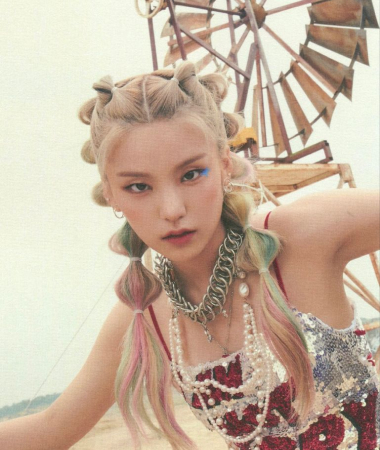

Integrantes


Em 21 de janeiro, a JYP Entertainment anunciou que estrearia um novo grupo feminino, sendo o primeiro grupo feminino da gravadora desde a estreia de Twice em 2015. No mesmo dia, a conta oficial do grupo no YouTube foi criada e o canal oficial da gravadora compartilhou um trailer de vídeo revelando as cinco integrantes do ITZY.
Seu nome é um trocadilho com a palavra coreana 있지 (itji), que significa ter, e a frase em inglês EVERYTHING YOU WANT IT’Z IN US ITZY? ITZY! (Tudo o que você quer tem em nós, não tem? Tem!) acompanha a identidade do grupo.
E elas têm tudo mesmo: talento, carisma, beleza e sucesso não faltam por aqui. Preparado para entrar no fandom?
ITZY estreou em fevereiro de 2019 com a música Dalla Dalla, sucesso instantâneo entre os k-poppers. A música incorpora elementos de subgêneros EDM, como future house e bass house. Suas letras de empoderamento foram bem recebidas pelo público.
ITZY ganhou seu primeiro prêmio, o "Melhor Novo Artista Feminino", em 1 de agosto de 2019 no M2 X Genie Music Awards. Nove dias após a estreia, em 21 de fevereiro de 2019, elas receberam sua primeira vitória no programa musical M Countdown da Mnet com "Dalla Dalla", se tornando o grupo feminino mais rápido a ganhar um prêmio em um programa musical. O grupo recebeu um total de oito prêmios de rookie em várias cerimônias de premiação em seu ano de estreia.
O comeback mais recente do ITZY é o single Not Shy, que faz parte de um EP com esse mesmo nome.